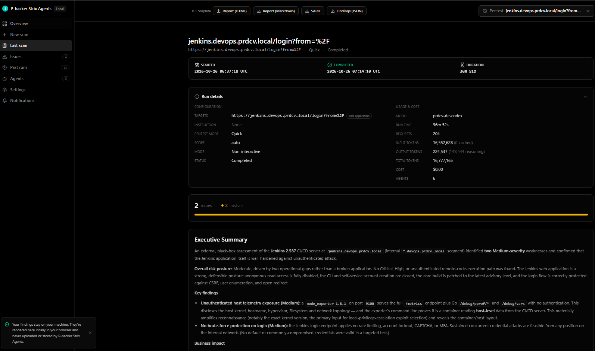
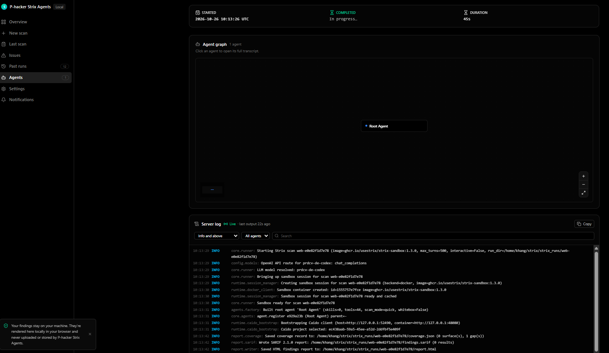
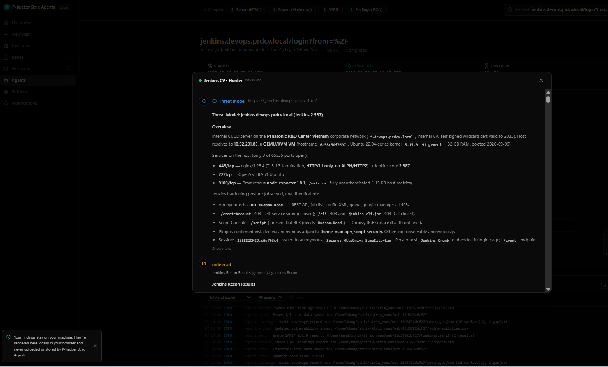

Every finding is proven
Agents don't just flag a pattern — they build a working exploit and save the request and response, so you triage facts instead of guesses.
Strix is an AI pentesting tool. A team of agents attacks your code or running app inside a local Docker sandbox, proves each finding with a working exploit, and saves everything to your disk.
Not a scanner that dumps a list of maybes. Strix proves what's real, keeps the work on your machine, and fits the way you already ship.
Agents don't just flag a pattern — they build a working exploit and save the request and response, so you triage facts instead of guesses.
The agents attack from inside a Docker container on your machine. Nothing deploys to a vendor cloud, and the blast radius stays contained.
Run strix view for an overview, validated vulnerabilities, a live agent graph, run history and reports.
The -n flag runs headless and exits non-zero on findings — so a scan can gate a merge like any other check.
Each run writes Markdown, HTML, per-finding notes and findings.sarif (SARIF 2.1.0) into strix_runs/.
A root agent maps the attack surface and spins up focused sub-agents — a recon pass, a CVE hunter, an injection prober — each with its own transcript you can open and read.
The viewer runs on 127.0.0.1 behind a private tokened link — a live agent graph, streaming server log, run details with token and cost, and an executive summary of what was proven.



You point Strix at something you own. It does the attacking. You review what it proved.
A local folder, a Git repository or a running web app. Add an instruction if you want it to focus on something specific, like one endpoint or an authenticated flow.
The agents run inside a Docker container on your machine — mapping the attack surface, trying exploits, and validating what actually works.
Run strix view for a dashboard with validated vulnerabilities, a live agent graph, run history and reports.
Same command shape, different target. Add --mount for a large repo, or --target-list to queue several at once.
Point at source already on disk.
Clone and scan straight from a URL.
Attack a staging URL end to end.
Hand it credentials for a test account.
The first run pulls the sandbox image, so allow a few minutes. Your model settings are saved to ~/.strix/cli-config.json, so you only set them once.
Before you scan
uv1 · Run a quick scan on the current directory
2 · Scan only what changed against main
3 · Open the results
Control cost and resumption with --max-budget-usd and --resume. The -n flag skips the interactive screen and exits non-zero on findings.
Strix is local by design. The only thing that leaves your machine is what you send to your own model provider.
strix_runs/.127.0.0.1 behind a private tokened link.LLM_API_BASE at an approved internal endpoint or a local model such as Ollama or LM Studio if the code is sensitive.Only test apps you own or have written permission to test. Strix runs real exploits against its target — prefer a staging environment and a dedicated test account over production data and real credentials.
Install, run one command, and open the local viewer. Your findings never leave your machine.